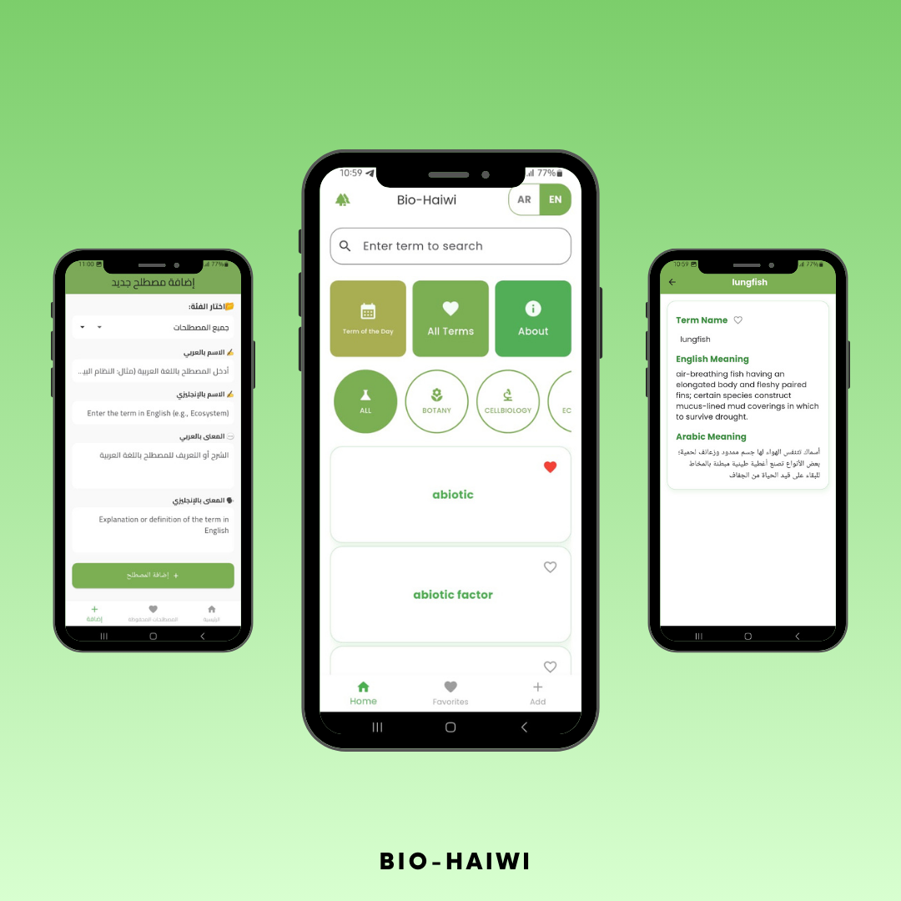

تطبيق بيو حيوي
تطبيق شامل لمصطلحات الأحياء باللغتين العربية والإنجليزية مع ميزات بحث متقدمة، المفضلة، ومزامنة البيانات
تصميم التطبيق

عن المشروع
تطبيق بيو حيوي هو تطبيق متخصص في مصطلحات علم الأحياء باللغتين العربية والإنجليزية. يوفر التطبيق تجربة تعليمية شاملة مع إمكانية البحث السريع، حفظ المصطلحات المفضلة، ومزامنة البيانات بين الأجهزة. كما يدعم العمل في وضع عدم الاتصال (Offline) لضمان الوصول للمعلومات في أي وقت.
شعار التطبيق
شعار احترافي يعكس هوية التطبيق التعليمية والتركيز على مصطلحات علم الأحياء.
دعم اللغتين العربية والإنجليزية


التطبيق يدعم كلا اللغتين العربية والإنجليزية بشكل كامل، مما يجعله مناسباً لجميع المستخدمين سواء الناطقين بالعربية أو الإنجليزية أو كليهما.
البحث المتقدم

ميزة بحث سريعة وفعالة تسمح للمستخدمين بالعثور على أي مصطلح بسهولة سواء بالبحث بالعربية أو الإنجليزية.
إدارة المصطلحات (للأدمن فقط)


نظام إدارة متكامل يسمح للأدمن فقط بإضافة وتعديل المصطلحات، مما يضمن دقة وجودة المحتوى. واجهة سهلة ومريحة لإدارة المحتوى.
عمل أوفلاين
التطبيق يعمل بشكل كامل في وضع عدم الاتصال (Offline Mode)، مما يعني أن المستخدمين يمكنهم الوصول لجميع المصطلحات حتى بدون اتصال بالإنترنت. البيانات محفوظة محلياً على الجهاز لضمان الاستمرارية في الاستخدام.
المميزات التقنية
- دعم كامل للغتين العربية والإنجليزية
- نظام بحث متقدم وسريع
- قائمة مفضلة محلية ومزامنة
- نظام إدارة محتوى للأدمن
- مزامنة بيانات بين الأجهزة
- عمل كامل في وضع عدم الاتصال
- تخزين محلي للبيانات
- واجهة مستخدم بسيطة وسهلة